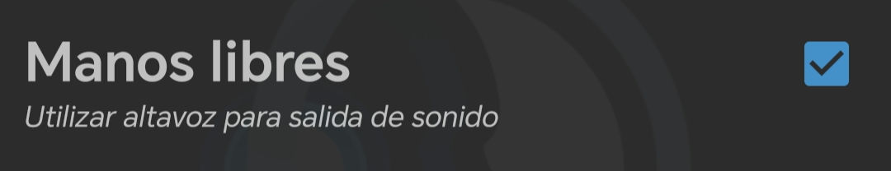

TeamSpeak cliente Voip que ofrece seguridad de nivel militar, latencia ultrabaja y el menor uso de recursos.
Este software es el nucleo principal de nuestra red, que hace posible la comunicación entre dispositivos.
LISTA USUARIOS TEAMSPEAK
ZONA DESCARGA
DISPOSITIVOS MOBILES
DISPOSITIVOS PC
 LINUX 64-bit 3.6.2
LINUX 64-bit 3.6.2Todas las versiones para PC son gratuitas.
Todos los enlaces recopilado en esta WEB proceden de la pagina oficial TeamSpeak.
Radioenlace Vhf no tiene relación con los creadores de la aplicación, ni es responsable de los posibles problemas que puedan aparecer.
*Incompatibilidades y errores*
ZONA INSTALACIÓN
MANUAL INSTALACIÓN
DATOS BASICOS DE CONFIGURACIÓN
XX es un número asignado por el Administrador.
Ejemplo 99-EA7AAA--SEVILLA
PROBLEMAS FRECUENTES TEAMSPEAK ANDROID
------------------------------
